Monster After Dark
Intro
Every Monster has a favorite Monster. Classic creatures meet the flavors that match their personalities, and the pairings carry onto the can itself.
Context
This personal marketing exercise explores a more playful side of Monster Energy, pairing the brand with iconic monsters through humor and parody. Familiar creatures become unexpected Monster fans, and each pairing carries beyond the photography into collectible can caps and moulded hand grips.
Client
Monster (Conceptual)
Tools
Photoshop
Year
2026
Role
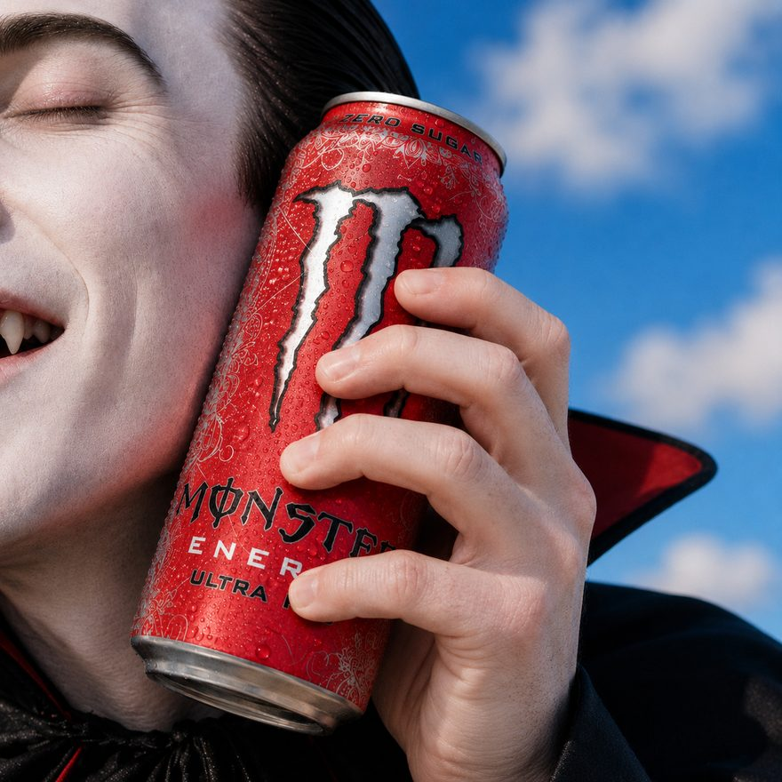
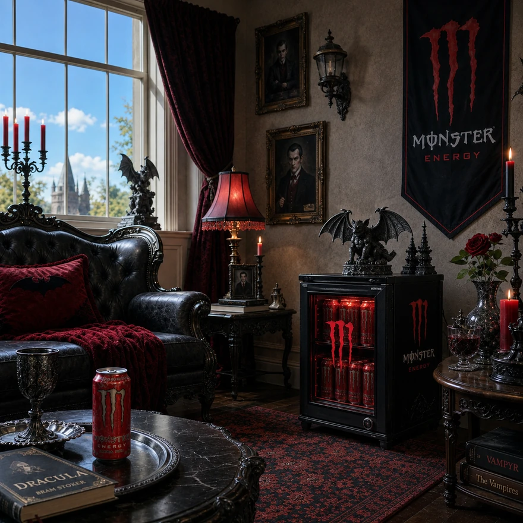
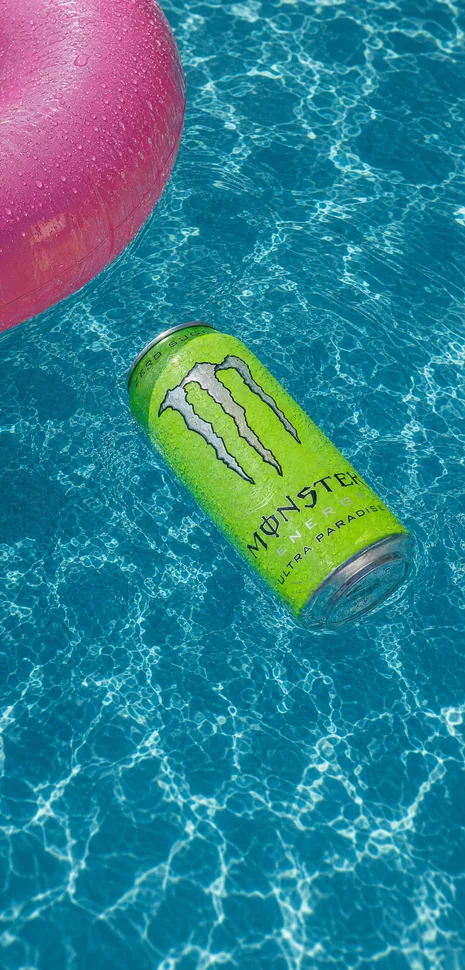
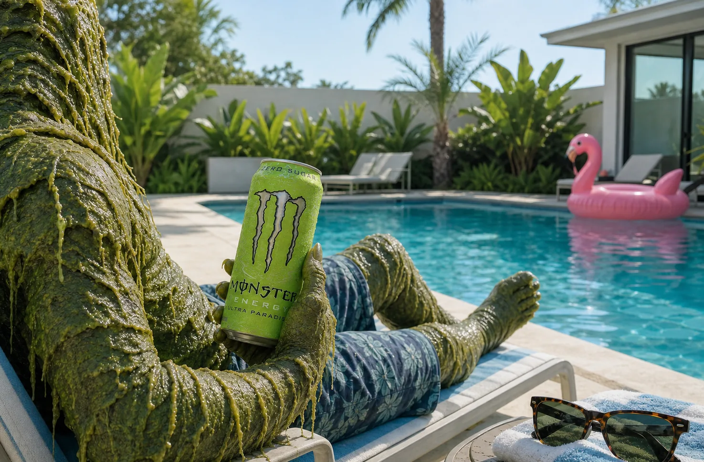
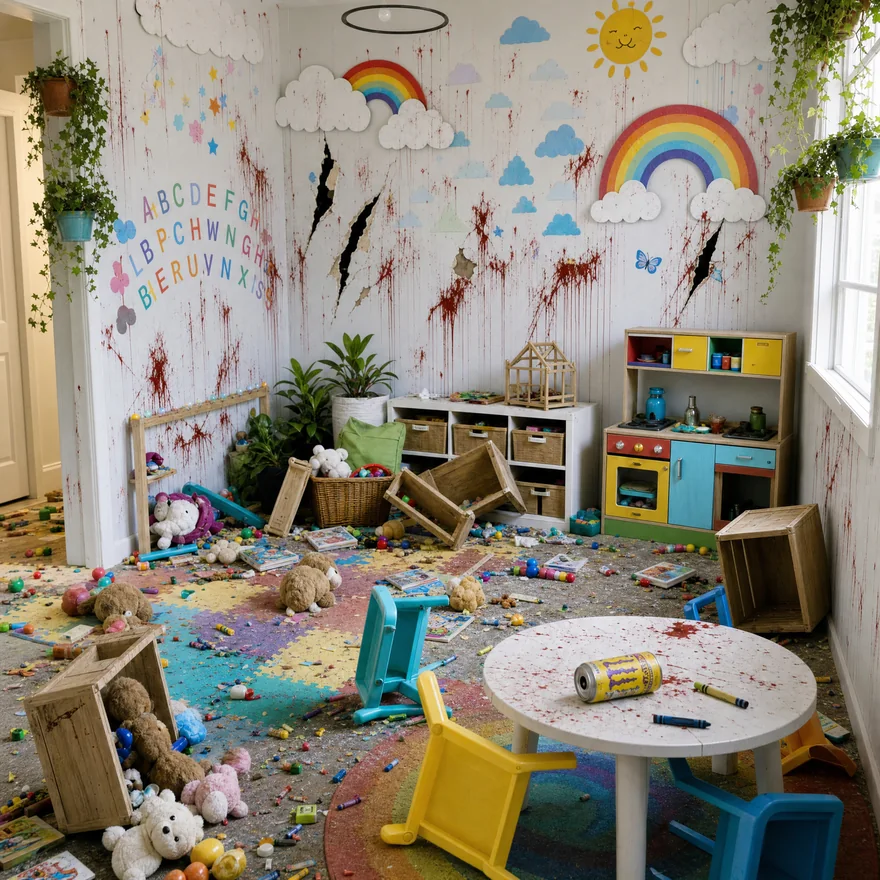
Overview
Each flavor is cast like a character, matched to the monster it suits, building a roster the campaign and the merch both draw from.

The merch
Two products, one roster. A collectible cap for the top of the can, and a moulded hand for the rest of it.
Cap figurines
Each monster becomes a cap, sat in the mouth of the can it was matched to. Collect one, or wait for the whole roster.
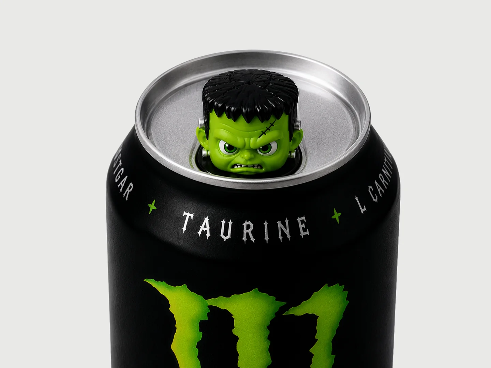
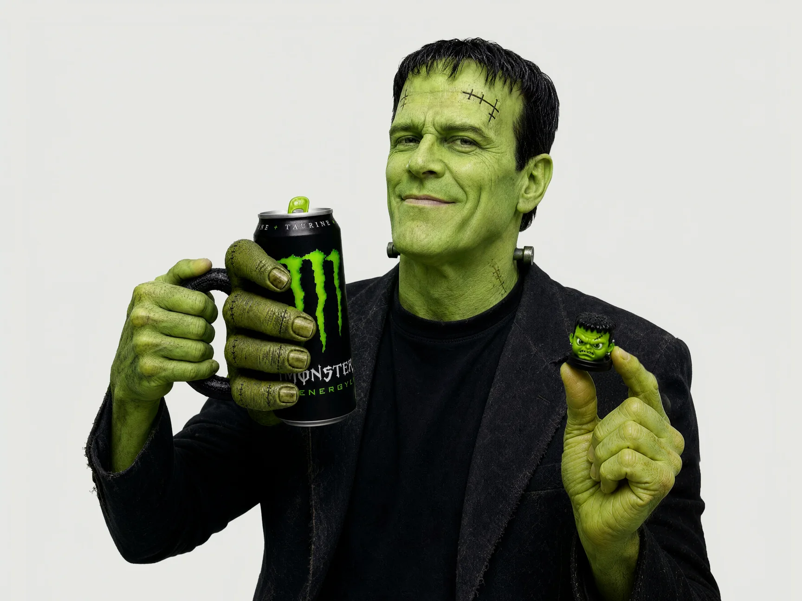
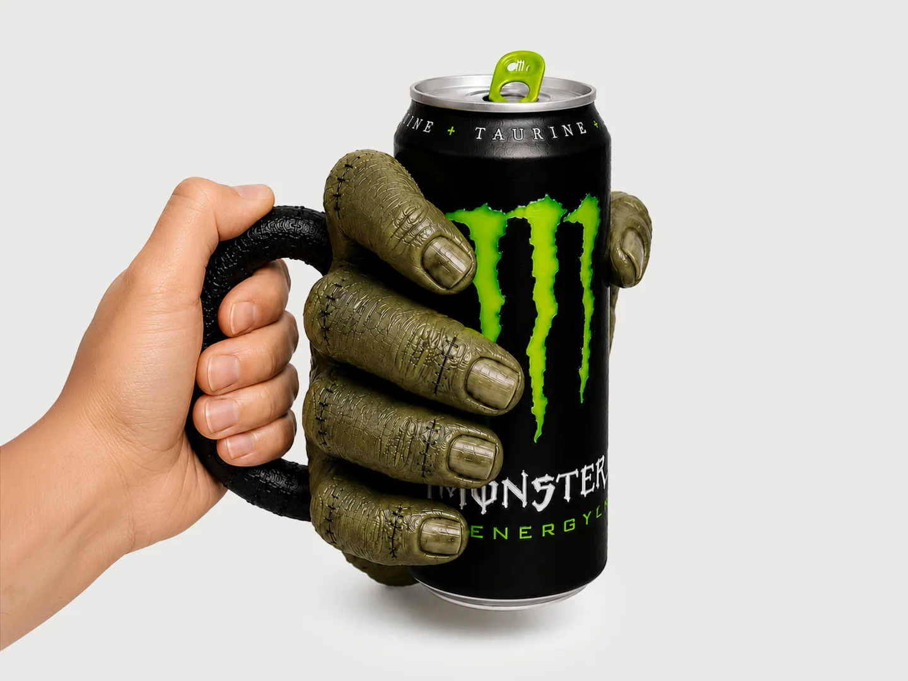
Hand grips
Moulded as the monster’s own hand, so the can arrives already in someone’s fist. Insulated silicone, handle included.
Intro
Nobody landing on this page has held a folding iPhone yet. Its job is to explain what folding changes about protection, not to close a sale.
Context
Spigen’s landing page for the iPhone Duo, Apple’s first foldable, built with the marketing team for the October 23 release. The brief was education and a low bounce rate rather than conversion: a hero that states the problem, a swipeable walk through the three features that answer it — the moving hinge cover, Air Cushion corners on both halves, and Seculink along the spine — each with a development history that opens full screen, and a product grid at the end that hands off to the store. Designed and built mobile first, in light and dark variants.
Client
Spigen
Tools
HTML, CSS, JavaScript
Year
2026
Role
The prototype
The working mobile build, running as it is rather than photographed. Scroll it: the hero resolves, the features swipe, and each development history opens over the page.
Three features
Folding changes where a phone gets hit. Three parts of the case answer that, and each gets its own story on the page.
Hinge protection
The cover moves with the fold and a spring cartridge in the hinge pin pulls it back, so the most exposed part of the phone is covered open, closed, or anywhere between.
![]()
Air Cushion and Seculink
Air Cushion corners on both halves, so a drop is absorbed whether it lands open or shut. Seculink, new for the Duo, joins the halves along the spine and moves with the hinge so the gap never opens.
Intro
To find out what a champion actually plays like, you have to leave the champion page. That is the problem worth fixing.
Context
Riot’s live page sends you somewhere else three times over: abilities are an icon and a paragraph, so you go to YouTube to see a cast; skins are splash art, so you watch a creator’s showcase to see the model you would actually play; the lore sits behind a tab that ends at a buy button. None of it needs a new asset to close — Riot already publish the footage, the meshes and the numbers, the page just does not use them. So I built the version that does, on their own art, footage and champion data. Never hosted, not open to visit; everything below is a capture of it running.
Client
Riot Games (Conceptual)
Tools
HTML, CSS, JavaScript, ffmpeg
Data
Data Dragon 16.17.1
Year
2026
Role
The ability module
Riot’s page tells you what an ability costs, but never shows you one being used. Here every ability plays its real clip, with its numbers right next to it, and the Ferocity bar fills the moment the cast lands.
The skin module
A skin is sold on a painting you never see again once the match starts. Here that painting sits next to the real model, and you can drop the camera to the game’s angle to see what you are actually buying.
The lore module
Four paragraphs behind a tab is where lore goes to be skipped. Rengar’s is a sequence of hunts and their cost, so it is set as a record: a trophy and a price on each entry, two of them blank.
The hunter
His damage comes from one place, the necklace, and it only grows when he wins. A page about him should be a record of what he has already killed, because the character already is one.
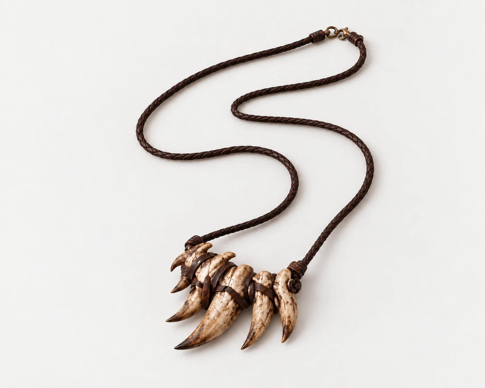
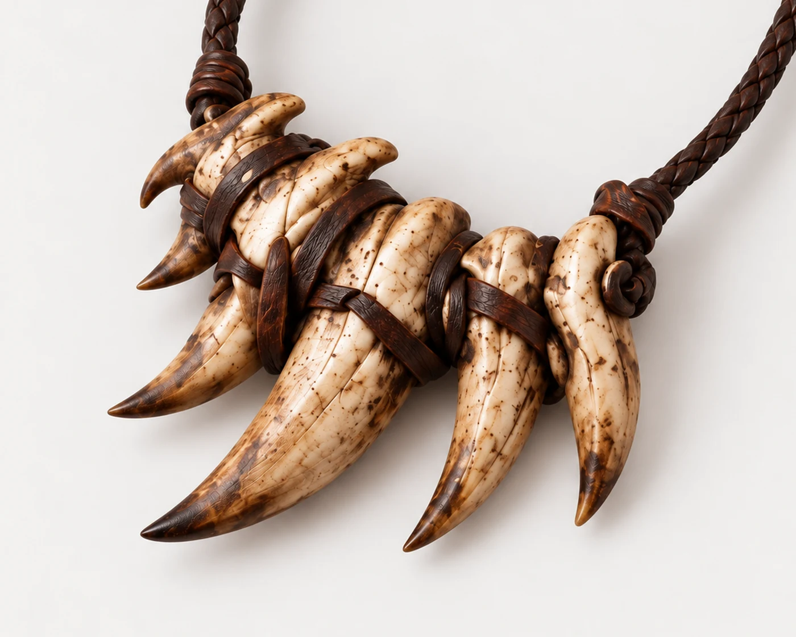
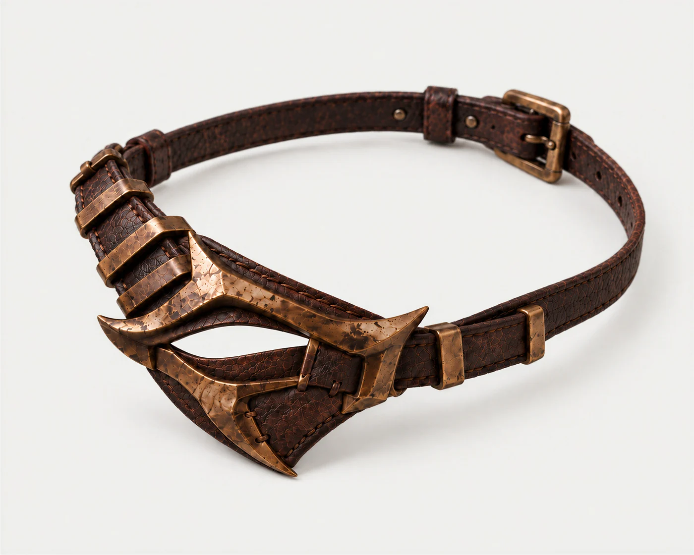
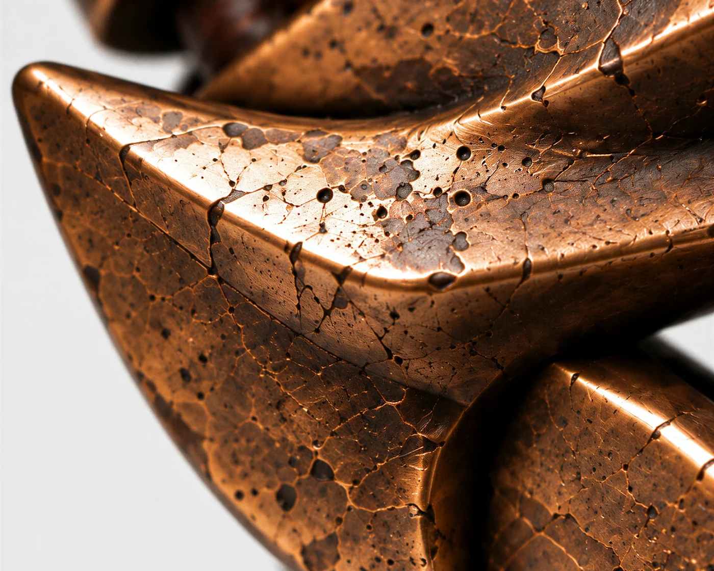
The rival
His defining event happened at the hands of a champion with their own page, and the client links the two nowhere. So this page ends on the unfinished hunt, and the rival’s name is the link Riot never gives you.
A design study — unaffiliated with Riot Games, non-commercial, and never hosted. Rengar, Kha’Zix, League of Legends, all champion art, ability icons, ability footage, names and lore are the property of Riot Games, Inc. Art and data are drawn from Riot’s public Data Dragon and Community Dragon endpoints, patch 16.17.1, and are reproduced here only to show the design work. Two departures worth naming: every skin splash except the base one has been processed to add motion, and the ability footage is base VFX rather than per-skin, because Riot publishes it per champion.
Next project